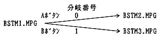

A button is pressed during playback of BSTM1.MPG → After playback of BSTM1.MPG, BSTM2.MPG is played.
B button is pressed during playback of BSTM1.MPG → After playback of BSTM1.MPG, play BSTM3.MPG.
Figure 5.1 Branch playback scenario example
The example program that sets this scenario is shown below.
#define BSTM_MAX 3 / * Total number of branch streams (BSTM1.MPG, BSTM2.MPG, BSTM3.MPG) * / #define BRANCH_MAX 2 / * Total number of branches (number of arrows in Figure 5.1) * / #define KEY_MAX 2 / * Total number of stream key types * / #define A_BTM 0 / * A button branch number * / #define B_BTN 1 / * B button branch number * / #define BR_NUM 2 / * Number of branches per stream * / #define BSTM1_ID 0 /*BSTM1.MPG branch stream identifier * / #define BSTM2_ID 1 /*BSTM2.MPG branch stream identifier * / #define BSTM3_ID 2 /*BSTM3.MPG branch stream identifier * // * Branch playback library work area * / Sint32 work_bpl [BPL_WORK_SIZE (BSTM_MAX, BRANCH_MAX, KEY_MAX) / sizeof (Sint32)];
void setScenario (void) { StmKey key [KEY_MAX]; / * Area to set the stream key * / Sint32 brtbl [BR_NUM]; / * Area to set the branch destination * / Sint32 fid; / * File identifier * /
/ * Initializing branch playback * / BPL_Init (BSTM_MAX, BRANCH_MAX, KEY_MAX, work_bpl);
/ * Set branch stream information * / STM_KEYCN (key + 0) = STM_KEY_CIMSK (key + 0) = STM_KEY_NONE; STM_KEY_CN (key + 1) = STM_KEY_CIMSK (key + 1) = STM_KEY_NONE; STM_KEY_SMMSK (key + 0) = STM_KEY_SMVAL (key + 0) = STM_SM_VIDEO; STM_KEY_SMMSK (key + 1) = STM_KEY_SMVAL (key + 1) = STM_SM_AUDIO; Fid = GFS_NameToId ('BSTM1.MPG'); BPL_SetStmInfo (BSTM2_ID, fid, keY_MAX, key); Fid = GFS_NameToId ('BSTM2.MPG'); BPL_SetStmInfo (BSTM2_ID, fid, KEY_MAX, key); ← (1) Fid = GFS_NameToId ('BSTM3.MPG'); BPL_SetStmInfo (BSTM3_ID, fid, KEY_MAX, key); ← (2)
/ * Set branch destination information * / Brtbl [A_BTN] = BSTM2_ID; / * Branch to BSTM2.MPG when A button is pressed Brtbl [B_BTN] = BSTM3_ID; / * Branch to BSTM3.MPG when B button is pressed * / → (2) BPL_SetBraNnchInfo (BSTM1_ID, BR_NUM, brtbl); / * Set the branch destination of BSTM1.MPG * / }